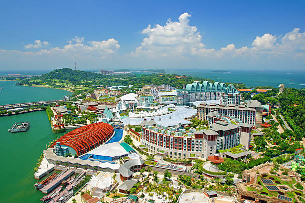

Singapore is more than its tourist attractions. It’s constantly evolving, reinventing, and reimagining itself, with people who are passionate about creating new possibilities. It’s not just about what you can do here, it’s about what you can be.
Vibrant Neighbourhoods
Step into Singapore's different districts,
from well-known precincts to quaint suburbs,
each with its own distinct character and charm.
Marina Bay
Marina bay represent all things modern and super stylish, from trendy dining destinations to exciting leisure spots

Sentosa Island
with its pristine beaches, exciting attractions and tropical landscape, the state of fun is sure to leave you spellbound
Orchard Road
From luxury retail to world-class international cuisines, Singapore's most famous shopping precinct is home to a wealth of experiences
Food Highlights
Share in our city’s food obsession, and discover a realm of new flavours, culinary passion and out-of-this-world dining experiences. Our guide to Singapore’s vibrant food scene will have you raring to go (or eat). If you’re a foodie who’s visiting Singapore for the first time, it’s easy to feel overwhelmed. Our sunny island’s trove of world-class eateries, Michelin-starred restaurants and dishes from all across the globe can make it difficult to know where to begin.